Optimal Control for Pendulum
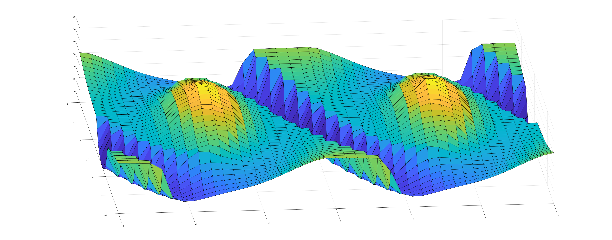
In this project I successfully computed the pendulum's cost-to-go function using a novel contour line approach, achieving an HJB error below 1e-4 both with and without control constraints. We discovered a non-smooth spiral line in the value function, leading to a detailed geometric analysis and a rigorous proof of its existence. Additionally, a 'quasi-discontinuous' line with a unilateral inverse proportional growth rate was identified in the spiral line in control input constrained case. When compared to other optimal cost-to-go functions, our method demonstrated superior outcomes and further guided network performance.
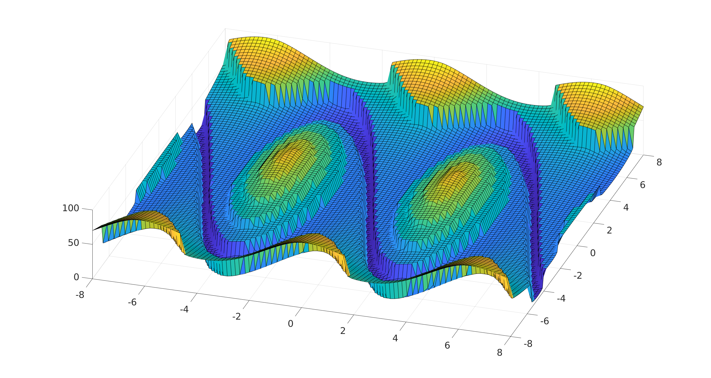
The method we use is backward PMP, equivalent to the Method of Characteristics. The original PMP trajectory is
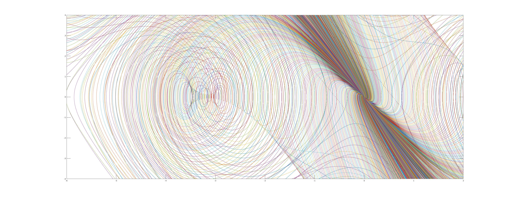
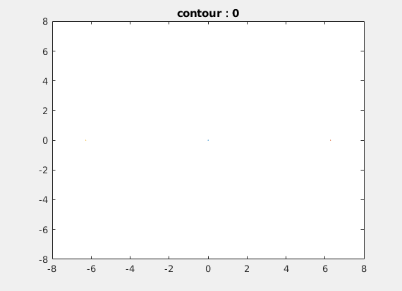
The finally intersection line looks like this: and it also the non-smooth line.
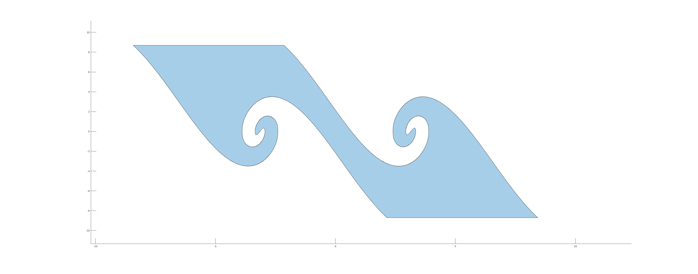
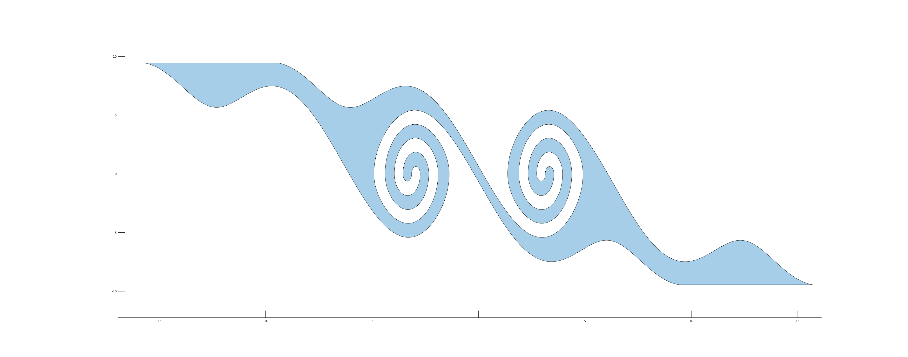
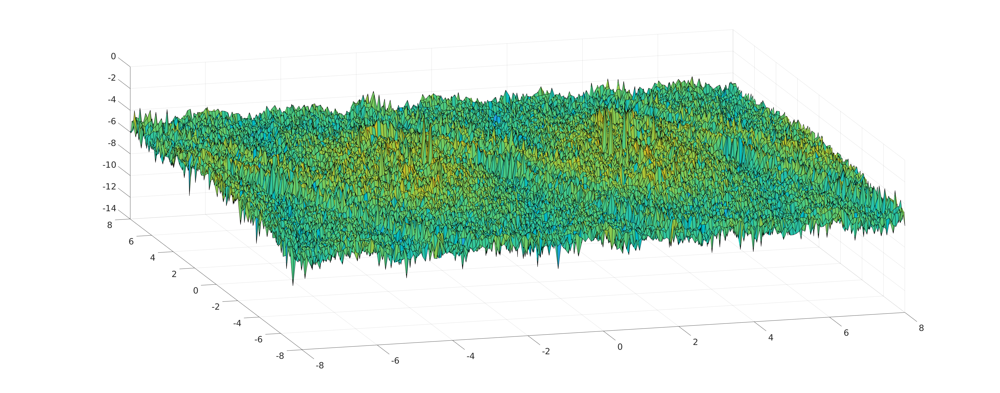
Observer Design
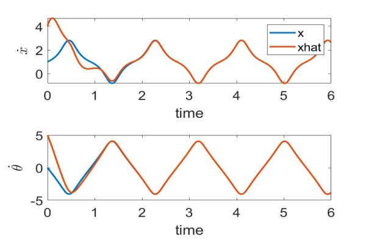
Cloth Shadow Art
The research focused on using differential simulation to design a square fabric with an arbitrary hole. When control inputs were applied, the dynamic shape of the hole matches a cartoon. The Finite Element Method (FEM) was implemented for cloth simulation, using StVK, ARAP, and bending energy models, with a comprehensive analysis of the Hessian, including 3D-2D projection differentiation. Various simulation methods like Implicit Euler, Explicit Euler, Projective Dynamics (PD), and Position Based Dynamics (PBD) were explored. A comparative study identified FEM as the most accurate method. Additionally, the study successfully optimized a waving wing example.First I implement Implicit,Explicit euler method、PD(Projective Dynamics)、PBD(Position Based Dynamics) and FEM method. For differential simulation I first tried PD method with friction and contact, and analysed its property.
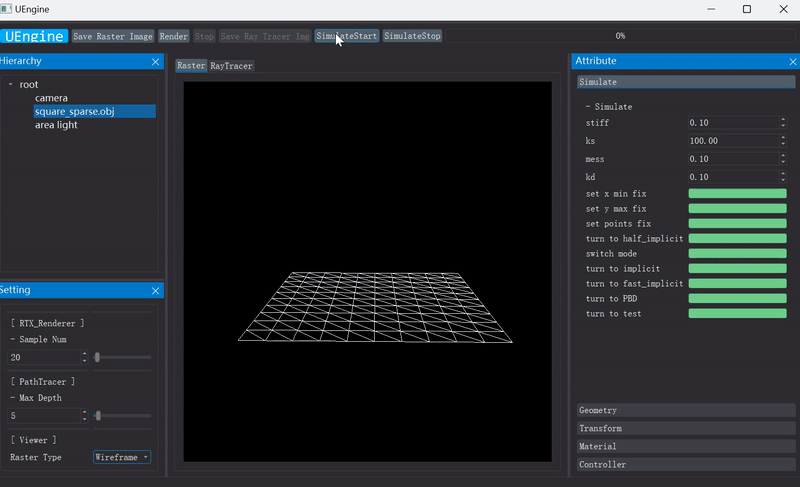
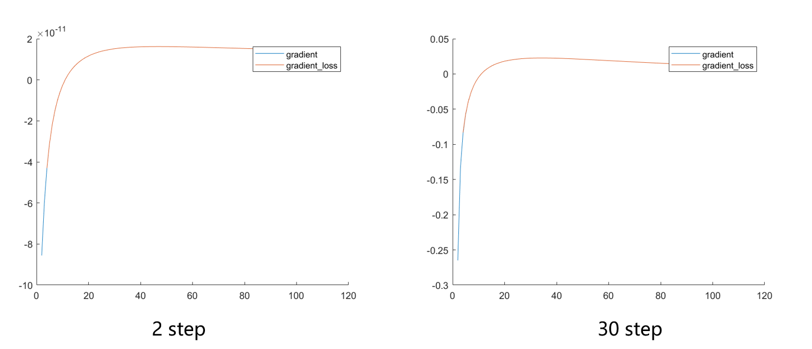
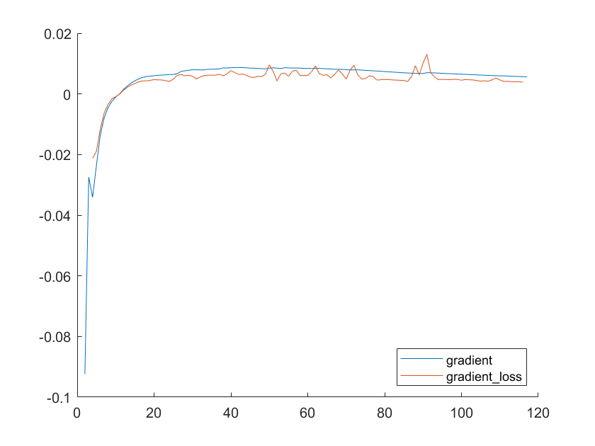

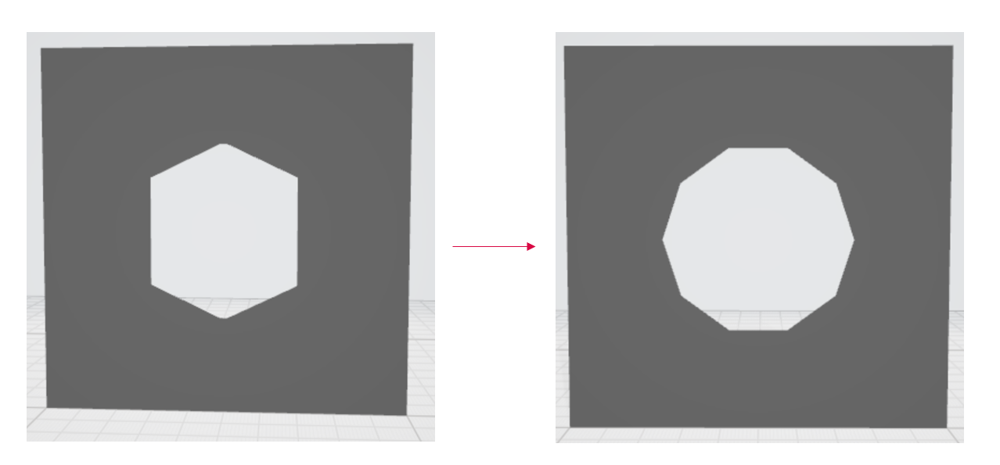
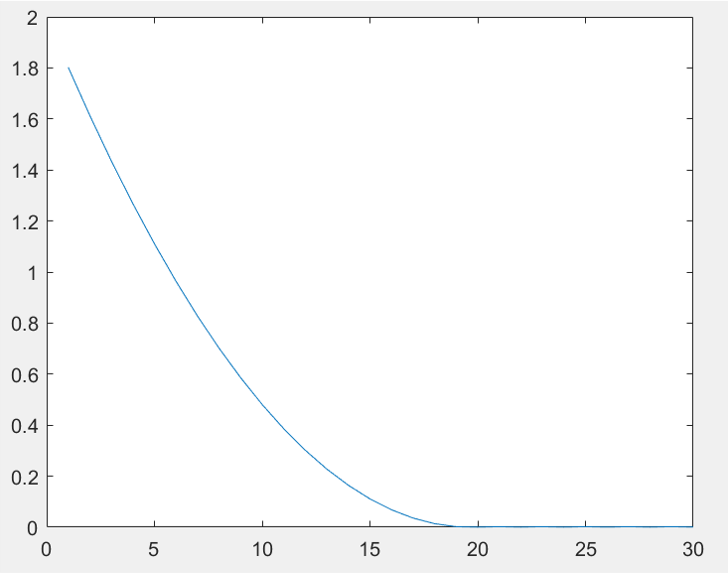
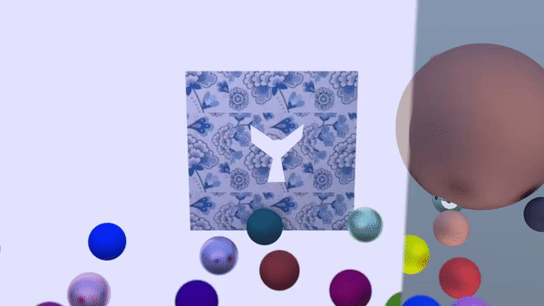
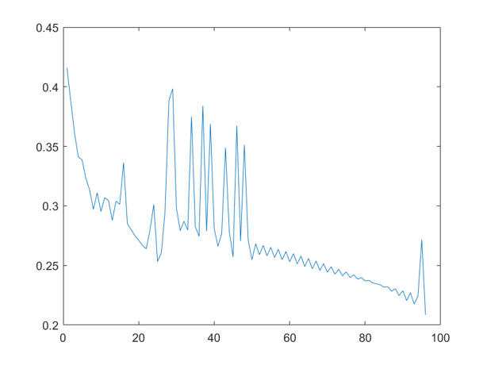
I am Haoyu Han, an undergraduate at the School of the Gifted Young in University of Science and Technology of China(USTC). I am currently a visiting intern in Computational Robotics Lab at the School of Engineering and Applied Sciences (SEAS), Harvard University, advised by Professor Heng Yang. Back in USTC I joined the Graphics&Geometric Computing Laboratory, advised by Professor Ligang Liu. I majored in Computational Mathematics , also known as Information and Computational Science. I am now interested in control and physical simulation. My previous experiences are about visualization and numerical computation, and I am eager to delve deeper into these topics. I have developed skills in ODE/PDE, Numerical Analysis, Control Theory, and Simulation.
As for math courses, I have taken Mathematical Analysis(A+), Data Structures and Database(A+), Differential Equations(A+), Linear Algebra, Numerical analysis(A+), Numerical algebra(A+), Finite Element Method etc. I also took some computer courses like Computer Graphics(A+), Deep Learning etc.
My research experience began in Computer Graphics (CG). I joined Graphics & Geometric Computing Laboratory (GCL) in USTC and first took online courses in CG. I honed my coding skills and became familiar with the classic topics in computer graphics. Subsequently, I conducted a survey on cloth simulation and implemented some classical methods. During this time I explored some ideas such as implementing unbalanced spring stiffness constants and applying wavelet analysis to cloth simulation. Following this, I delved into Differential Simulation and commenced a project on cloth shadow art.(see research experience)
When researching differential simulation, I gradually developed an interest in the topic of simulation in robotics and wanted to learn more about the field. This led me to start a summer internship at Harvard University, advised by Professor Heng Yang. During the internship, I first worked on observer to become familiar with some classical setting and techniques in robotics. Then I delved into optimal control problems, starting with a simple pendulum example. However, we found that even the pendulum system is complex in a continuous-time, infinite-horizon setting. Finally we calculated the true cost-to-go and discovered a non-smooth spiral line.
As for phd life, I aim to develop theories about how to guided computer and robotics understand and interact with the real world using computational method.
As for math courses, I have taken Mathematical Analysis(A+), Data Structures and Database(A+), Differential Equations(A+), Linear Algebra, Numerical analysis(A+), Numerical algebra(A+), Finite Element Method etc. I also took some computer courses like Computer Graphics(A+), Deep Learning etc.
My research experience began in Computer Graphics (CG). I joined Graphics & Geometric Computing Laboratory (GCL) in USTC and first took online courses in CG. I honed my coding skills and became familiar with the classic topics in computer graphics. Subsequently, I conducted a survey on cloth simulation and implemented some classical methods. During this time I explored some ideas such as implementing unbalanced spring stiffness constants and applying wavelet analysis to cloth simulation. Following this, I delved into Differential Simulation and commenced a project on cloth shadow art.(see research experience)
When researching differential simulation, I gradually developed an interest in the topic of simulation in robotics and wanted to learn more about the field. This led me to start a summer internship at Harvard University, advised by Professor Heng Yang. During the internship, I first worked on observer to become familiar with some classical setting and techniques in robotics. Then I delved into optimal control problems, starting with a simple pendulum example. However, we found that even the pendulum system is complex in a continuous-time, infinite-horizon setting. Finally we calculated the true cost-to-go and discovered a non-smooth spiral line.
As for phd life, I aim to develop theories about how to guided computer and robotics understand and interact with the real world using computational method.
Successfully computed the pendulum's cost-to-go function with an HJB error under 1e-4 using a unique contour method. Discovered a non-smooth spiral and a 'discontinuous' line, rigorously analyzing their geometries.
Transformed dynamics of systems such as cartpole and quadrator into high-gain forms. Implemented and optimized the high-gain observer. Validated error bounds through network analysis and real robot experiments.
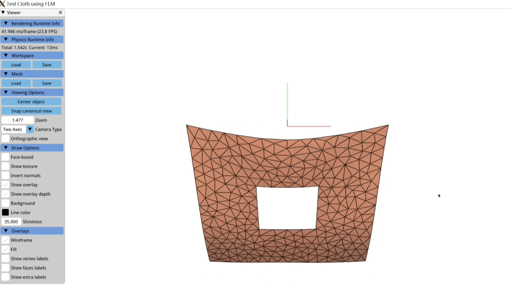
Using differential simulation to design a fabric with a unique hole that match a cartoon when influenced by control input. Various simulation techniques were explored, with FEM proving the most authentic. The research also optimized a waving wing example.
See my github repository.